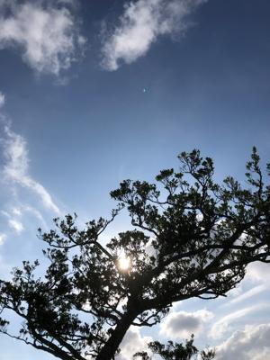
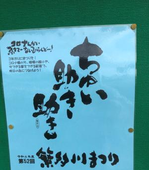
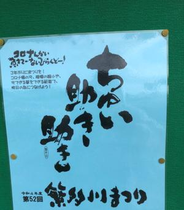

うるがいの話 ある日
最新: ロハスタイル【うるがいの話 ある日】とは 一日だけのプログです
『うるがいの話』の最新一日だけのプログで、通信料が少なく経済的だ。カニの画像をクリックすると全ての日付が載る『うるがいの話』サイトを表示します
|
|
【うるがいの話】 うるがい(ｳﾙｶﾞｲ urugai)とは、『もずくがに』の名前でとても大きくなります。 |
|---|---|
|
|
【カミマヤーの話】 猫のことを方言でマヤーといいます。カミマヤー（kamimayaa）とは、神の猫のことです。 |
|
【たながぁの音楽】 たながぁ（ﾀﾅｶﾞｰ tanagaa）とは手長えびのことで、何種類かあり大きいのは車 エビぐらいになります。 |

|
【ぶながぁの話】 ぶながぁ(ﾌﾞﾅｶﾞｰ bunagaa)とは、赤い髪の毛、赤い身体、そして身長は１ｍ２０ｃｍ ぐらい、川の蟹を食べているの目撃された。場所は沖縄県国頭郡大宜味村のと ある村僕の隣近所に住んでいる爺さんから、聞いた話です。 |
|
|
【ギーマの話】 ギーマ(giima)とは、山原の里山に咲くスズランに似た、 花を付けます。実は食べられます、 気が付くと口の周りが紫になっています。 |
2022年10月08日 (土）ロハスタイル
18:16

 


LOHAS（ローハス / ロハス）とは、Lifestyles of Health and
Sustainability の頭文字をとった略語で、直訳しますと、
地球環境と人との健康を重視し、持続可能な社会のあり方を志向するライフス
タイルのことです。
同級生が出ていた番組はＲＢＣ放送『気ままにロハスタイル』。やややっぱり
著しく老けていた。ヨメが老人みたいと・・・、いろいろあったかもしれない
高校はサッカー、大学はラグビーとスポーツに励んでいたが、いまの姿から見
る影もない。運動は続けていった方が好ましい、夕方、近所に住んでいる元会
社のＯＢであるナガドウさんの散歩と向かい合わせになり、『まだ、走ってい
るのか』と言われた、ハイ、ナハマラソンはもう出ませんがと答える（もう、
心臓が持ちませんと言おうとしたが止めた）。そういえば１０月になって、常
連さん以外のランナーが多く見かけるようになった。現役時代（退職前）は、
今頃の土曜日には毎週１８キロも走っていたが、昨日金城石畳の向かいの地獄
坂を走っていると、道を挟んだ反対側で中学生の女生徒が歩いて登る速度と一
緒だった。追い越されないように頑張る。友達は与那に住んでいる、与那か、
はいい所だが、遠すぎる。あと、１０年もしたら、私の村と同様、老人しかい
ないだろうと想像するのは、寂しすぎるかな。
１８時１１分 ビットコインの総資産 ￥８、２１０↓